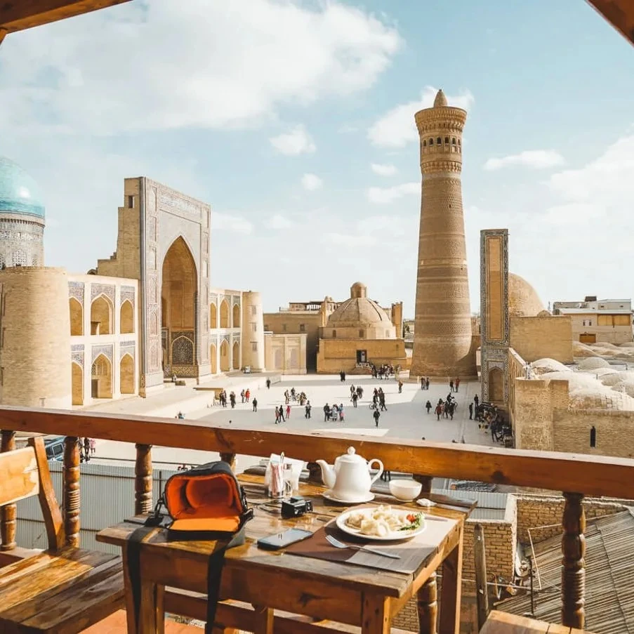
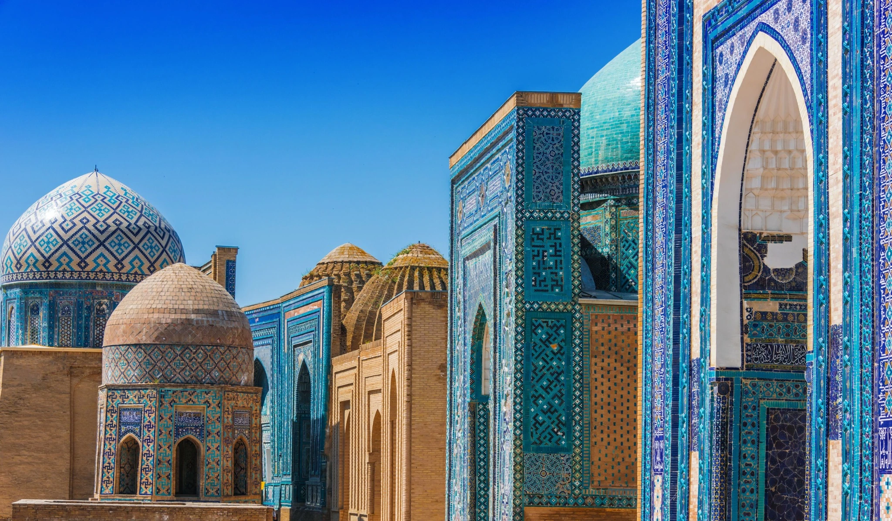
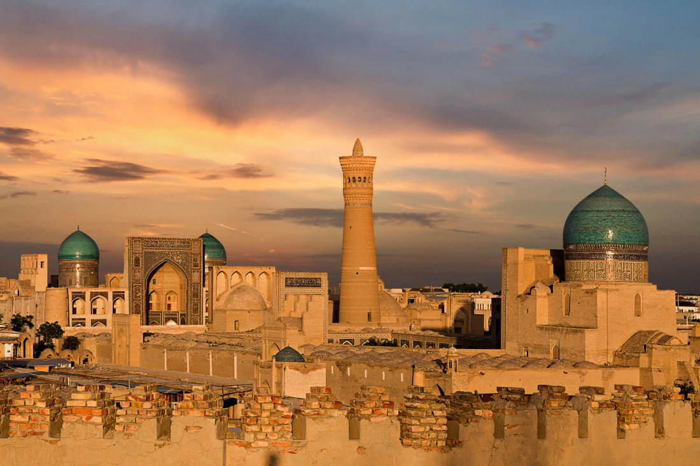
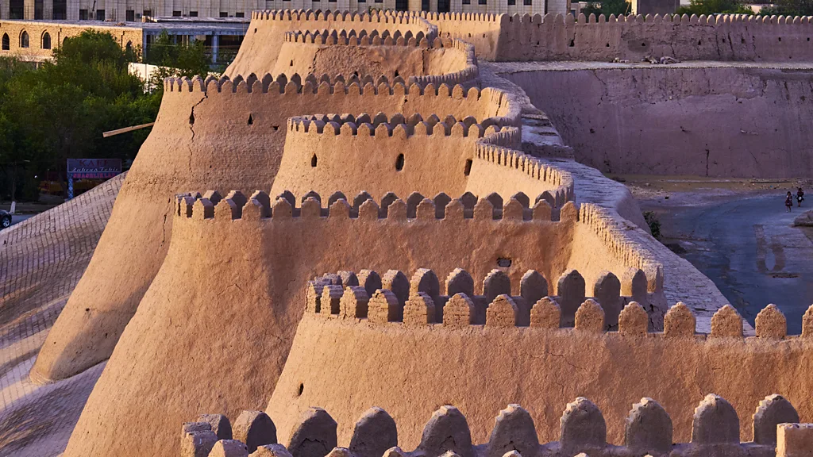
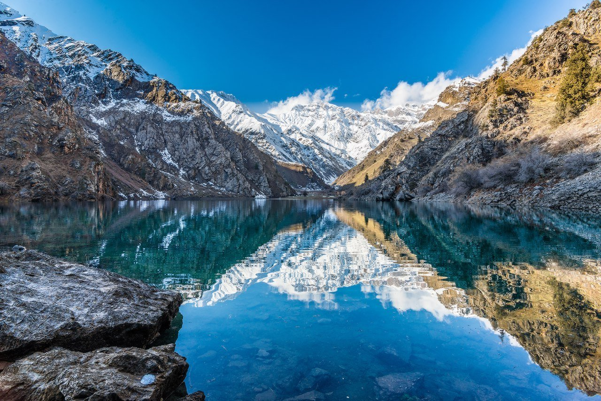
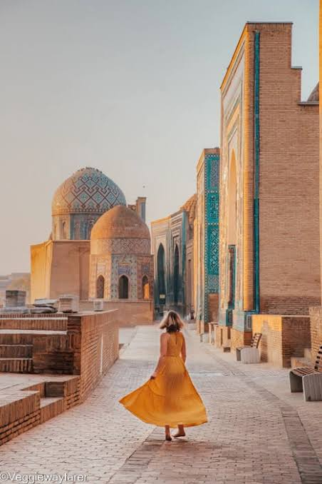
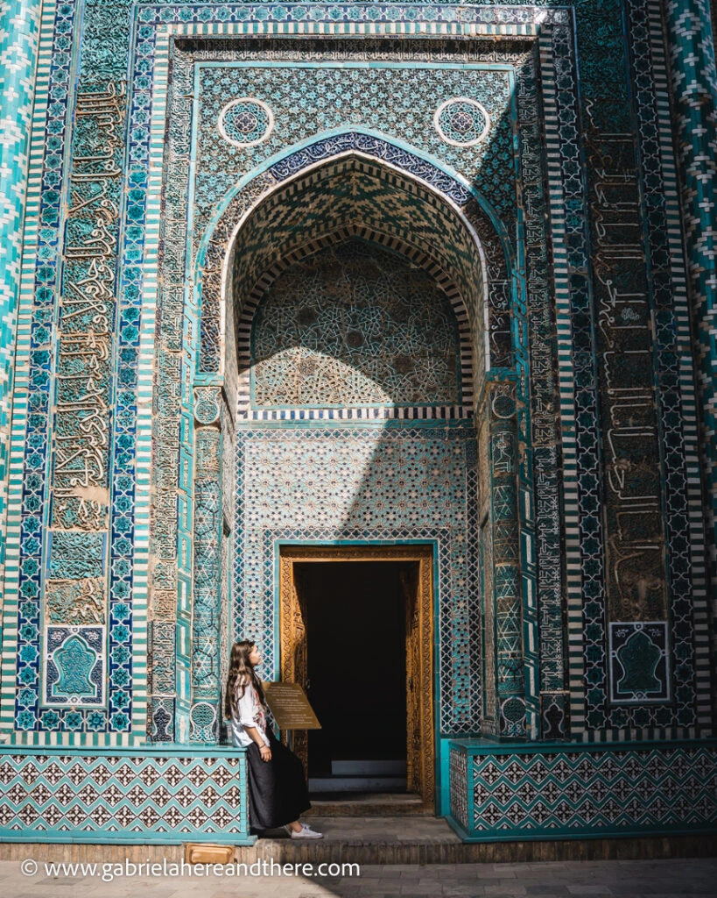
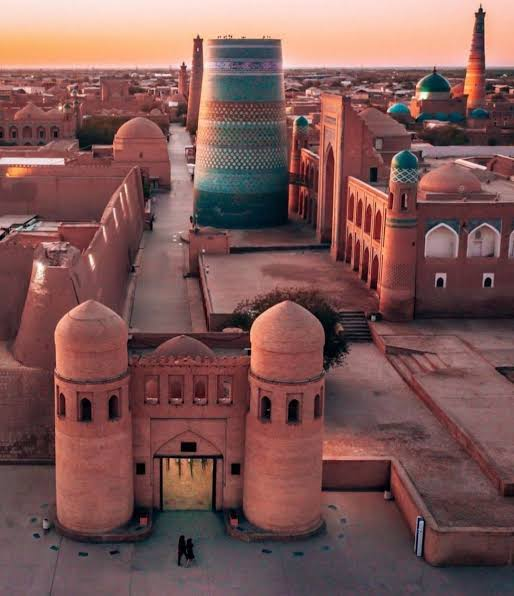
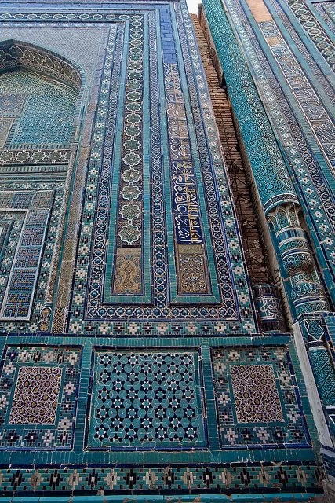

Продуманные маршруты
Помогаем выбрать интересные места и удобную программу путешествия.
ПУТЕШЕСТВИЯ ПО УЗБЕКИСТАНУ
От древних городов Шёлкового пути до живописных пейзажей — путешествие, которое откроет вам Узбекистан с новой стороны.
Подобрать тур →ПОПУЛЯРНЫЕ НАПРАВЛЕНИЯ
Архитектура, старинные улочки и живые традиции — у каждого города свой характер и своя история.

СамаркандМозаики Регистана, бирюзовые купола и величие эпохи Тимуридов.→
БухараДревние медресе, минареты и атмосфера старого восточного города.→
ХиваКрепостные стены, бирюзовые купола и ансамбль Ичан-Кала.→
Горный отдыхЧимган, Чарвак и красивые пейзажи для отдыха на природе.→ИДЕИ ДЛЯ ПУТЕШЕСТВИЯ
От насыщенных экскурсий до неспешных прогулок — выберите маршрут, который ближе именно вам.
ЗА ПРЕДЕЛАМИ ДРЕВНИХ ГОРОДОВ
Горные дороги, бирюзовая вода Чарвака и свежий воздух Чимгана — добавьте в путешествие время для природы и отдыха.
Рассмотреть горный отдых →ПОЧЕМУ DREAM COMPASS
Поможем сориентироваться в направлениях и подобрать формат путешествия под ваши интересы.

Помогаем выбрать интересные места и удобную программу путешествия.

Ответим на вопросы о направлениях и поможем разобраться с организационными деталями.

Исторические города, культурные места и поездки разной продолжительности.

Помогаем сделать планирование поездки понятнее и комфортнее.
ПОДБЕРЁМ ПУТЕШЕСТВИЕ
Расскажите, какие места хотите увидеть, а мы поможем обсудить подходящий маршрут.

Каждое путешествие
начинается с мечты